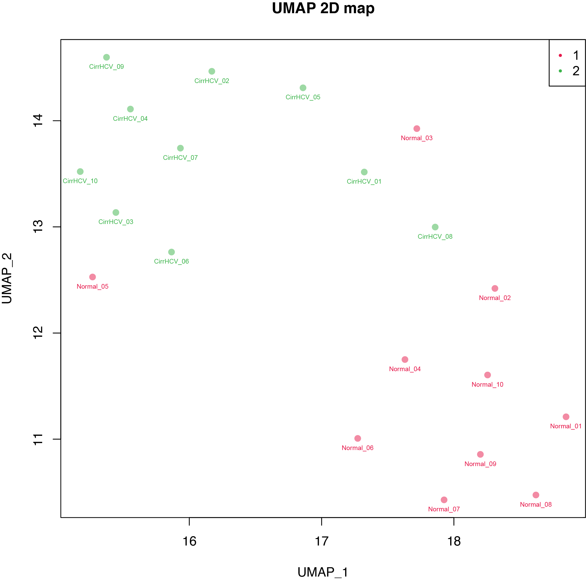

11. beta_UMAP
11.1. Overview
beta_UMAP performs Uniform Manifold Approximation and Projection (UMAP)
on DNA methylation samples.
The input matrix must have CpGs in rows and samples in columns. CpGs are treated as features and samples as observations.
A sample-group file is optional and can be used to color samples in the plot.
11.2. Input Files
11.2.1. Beta matrix
The first column contains CpG IDs and the remaining columns contain sample Beta-values. Common delimiters and compressed input are supported.
Example:
CpG_ID Sample_01 Sample_02 Sample_03 Sample_04
cg_001 0.831035 0.878022 0.794427 0.880911
cg_002 0.249544 0.209949 0.234294 0.236680
cg_003 0.845065 0.843957 0.840184 0.824286
Requirements:
at least three samples;
unique CpG IDs;
unique sample IDs.
Finite values outside the expected Beta-value range [0, 1] are retained, but a warning is reported.
11.2.2. Group file
The optional group file contains two columns: sample ID and group label. Comma- and tab-delimited files are supported, with or without a header.
Example:
Sample,Group
Sample_01,normal
Sample_02,normal
Sample_03,tumor
Sample_04,tumor
If a group file is supplied, every sample in the Beta matrix must be present in the group file.
If no group file is supplied, all samples are assigned to one group named
All_samples.
11.3. Missing Values and Preprocessing
By default:
CpGs containing any missing value are removed;
zero-variance CpGs are removed; and
CpG features are standardized across samples before UMAP.
Use --na_policy impute to replace missing values with the per-CpG mean.
CpGs containing only missing values are removed before imputation.
Use --no_standardize to skip feature standardization.
11.4. Usage
Basic usage:
beta_UMAP \
-i cirrHCV_vs_normal.data.tsv \
-g cirrHCV_vs_normal.grp.csv \
-o cirrHCV_vs_normal
Useful options include:
-n,--n_components,--ncomponent– embedding dimensions, either 2 or 3 (default: 2)--n_neighbors,--nneighbors– number of neighboring samples used to learn local manifold structure (default: 15); must be at least 2 and smaller than the number of samples--min_dist,--min-dist– minimum distance between embedded points (default: 0.2)--spread– effective embedding scale (default: 1.0)--metric– distance metric accepted byumap-learn(default:euclidean)--init {spectral,random}– initialization method (default:spectral)--densmap– enable densMAP--seed– random seed (default: 99)--na_policy {drop,impute}– missing-value handling (default:drop)--no_standardize– skip CpG standardization--label– add sample IDs to the plot--marker {circle,dot}– plot marker style (default:circle)--alpha– point opacity (default: 0.8)--point_size– point size (default: 45)--legend_location– legend position (default:best)--format {png,pdf,both}– plot format (default:pdf)--dpi– PNG resolution (default: 300)--width/--height– plot size in inches (default: 8 x 8)--no_plot– write coordinates without generating a plot-o,--out_prefix,--output– output prefix
--min_dist must be in [0, 1), --spread must be greater than zero, and
--min_dist cannot be greater than --spread.
Display all options with:
beta_UMAP -h
11.5. Output
For output prefix cirrHCV_vs_normal, the command always writes:
cirrHCV_vs_normal.UMAP.tsv– UMAP coordinates and group labels
Unless --no_plot is used, it also writes one or more plots:
cirrHCV_vs_normal.UMAP.pdfcirrHCV_vs_normal.UMAP.png
Use --format both to generate both plot formats.
The coordinate table contains UMAP1 and UMAP2 for a 2D embedding,
and also UMAP3 when --n_components 3 is used. Plotting always uses the
first two dimensions.
11.6. Example Data
11.7. Example Figure
{kind=link}
